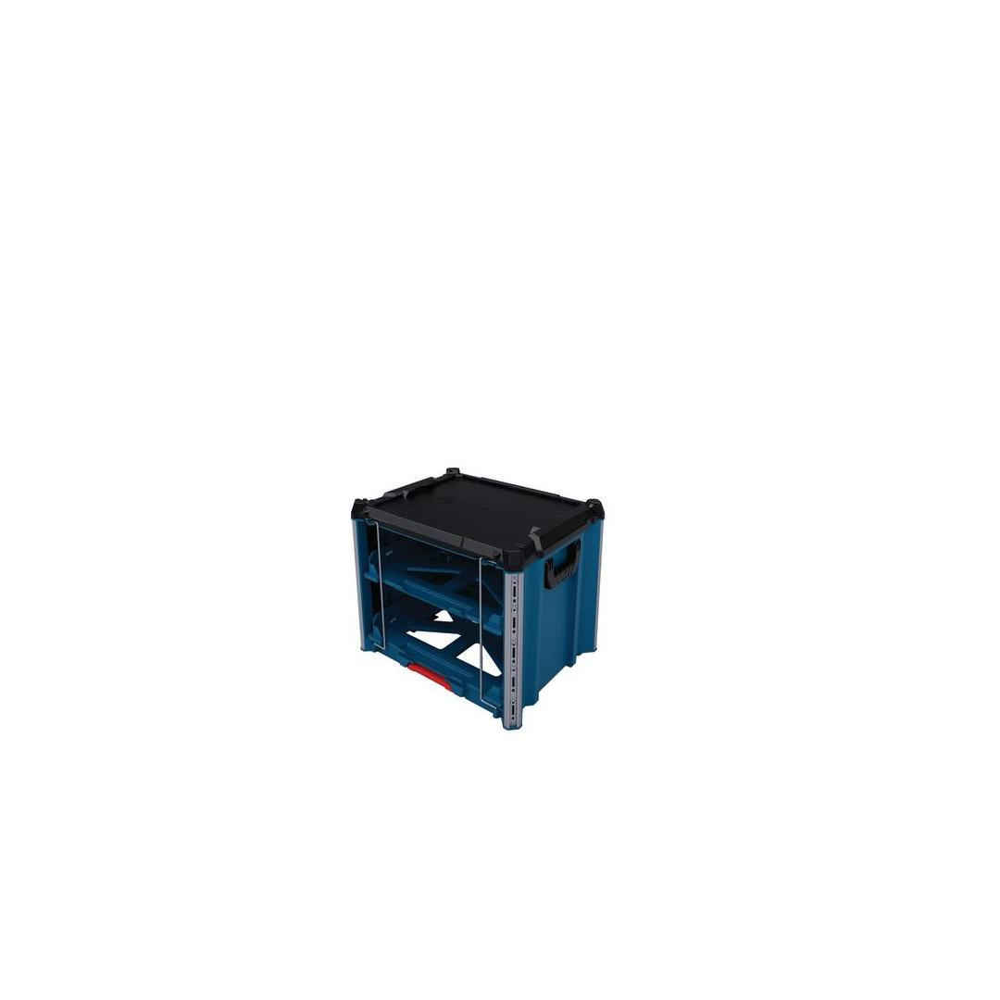
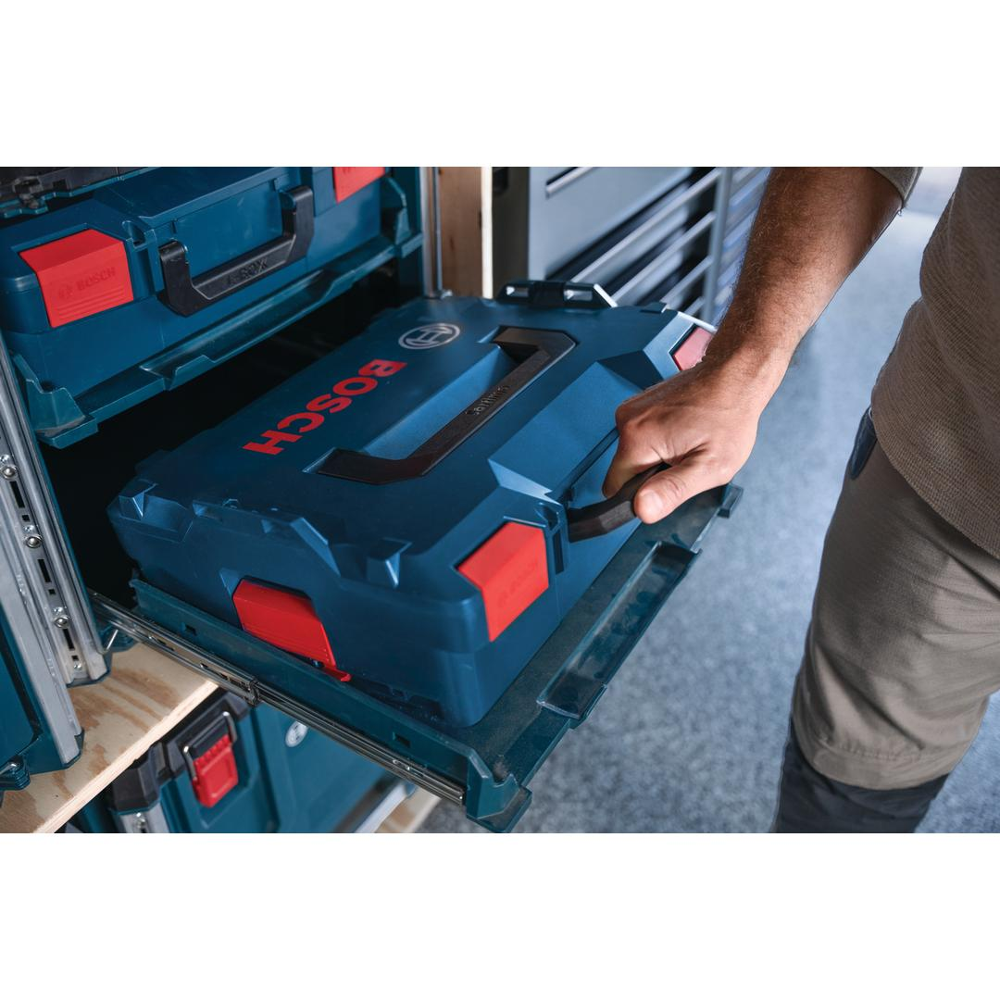
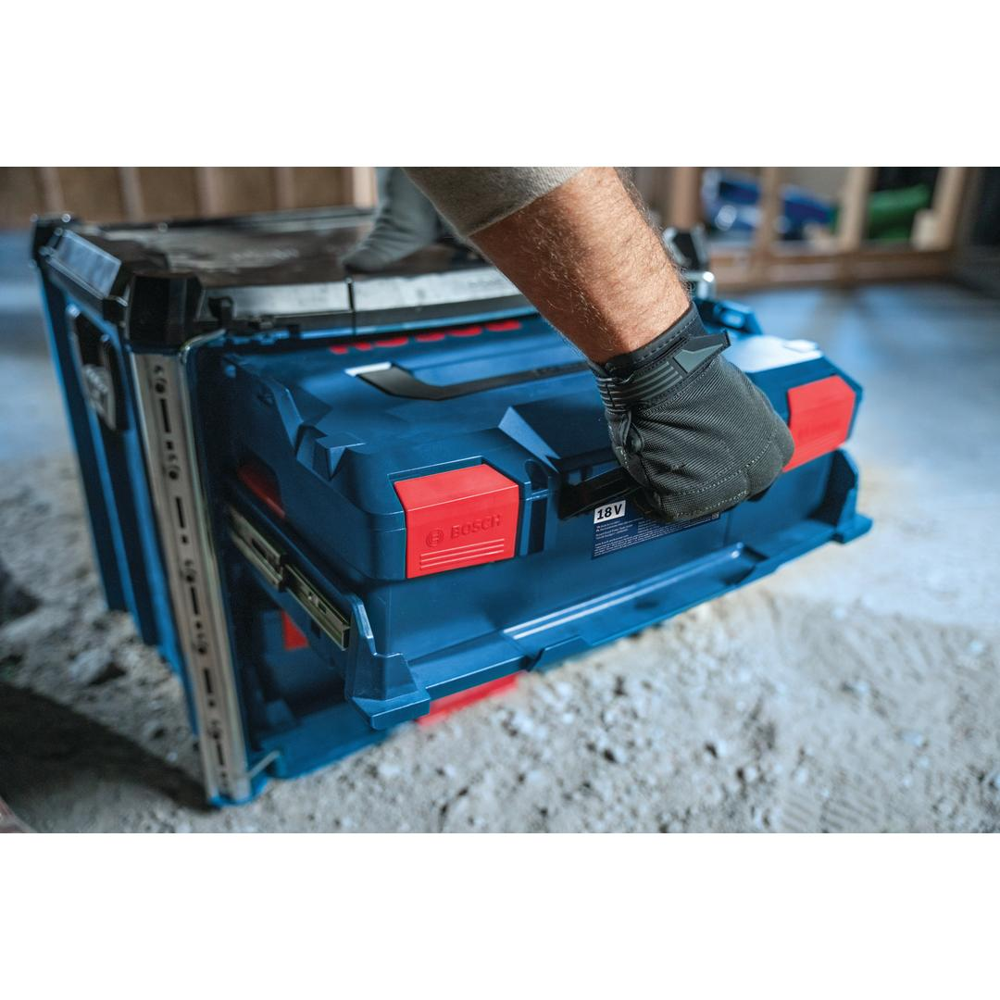
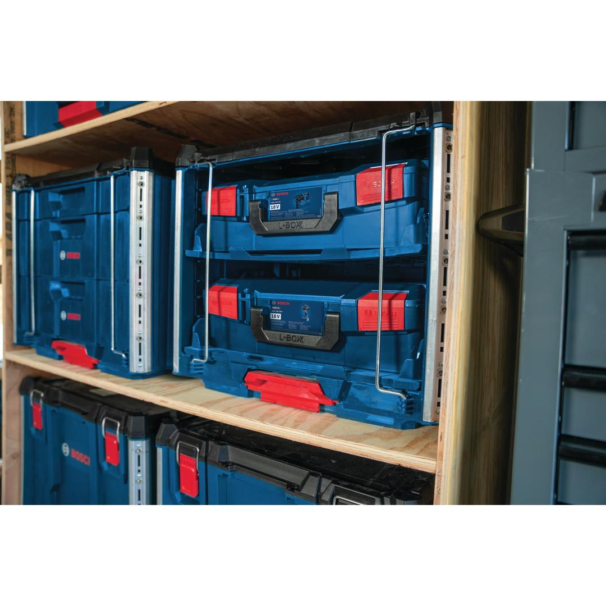
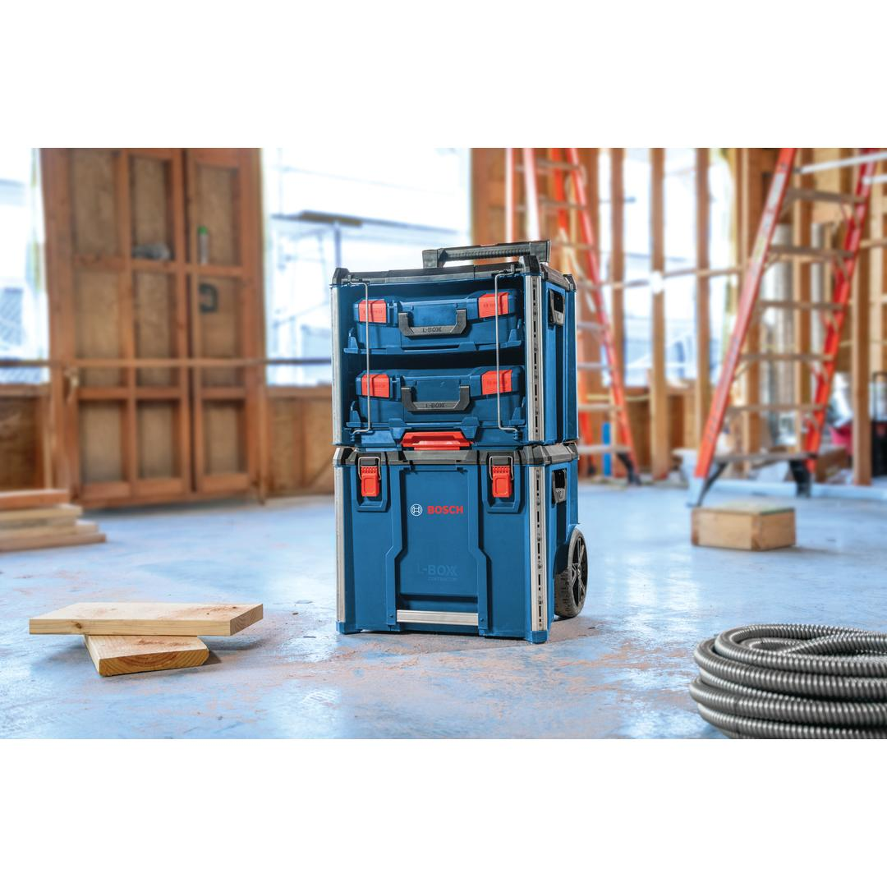

1600A037E4






| Total weight capacity |
35 kg |
| Pad-lock compatibility |
Yes |
| Shelf slider for L-Boxx |
Yes |
| Metal reinforced edges |
Yes |
| Side handles |
Yes |
| Number of sliders |
2 slider |
| L-Boxx compatibility |
Yes |
| Material |
PP |
L-BOXX Contractor Rack 2 for easy storage of two standard L-BOXXes
The L-BOXX Contractor System is the go-to mobile tool storage solution that combines durability and versatility. Its interlocking modular design allows seamless connection with all other L-BOXX Contractor System products. The L-BOXX Contractor Rack 2 is designed to hold two standard L-BOXXes and can be stacked on top of or below any other component of the L-BOXX Contractor assortment. With its impact-resistant body and metal-reinforced corners, the Rack 2 keeps your L-BOXXes and their contents protected in tough jobsite environments. And it has convenient sliders so you can fully open the L-BOXXes in the Rack without removing them. The Rack 2 comes with two side handles for easy carrying.
The L-BOXX Contractor Rack 2 has integrated aluminum accessory rails for attaching ProClick products. All L-BOXX Contractor products are backward compatible with standard L-BOXXes.